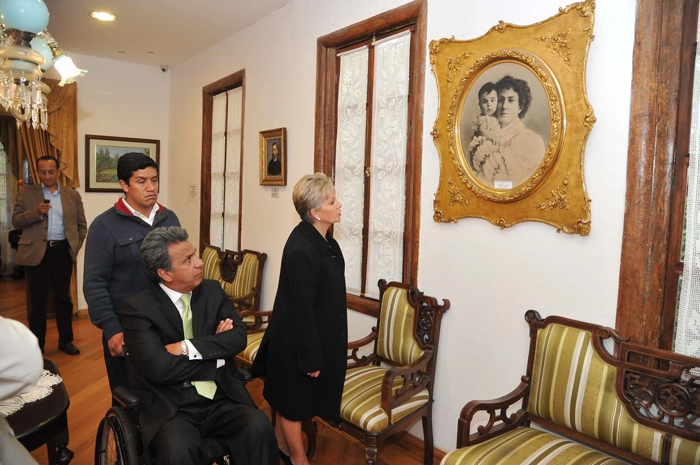
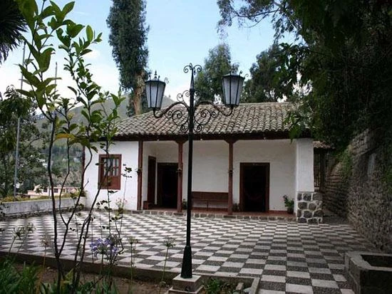
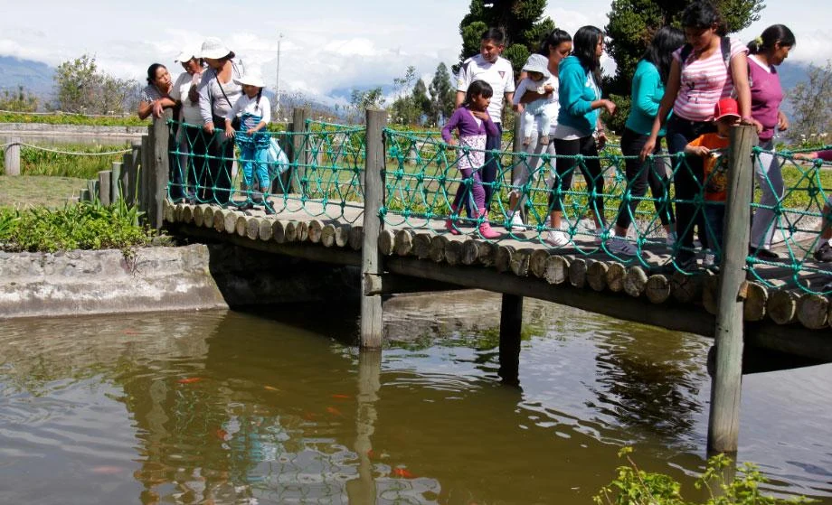
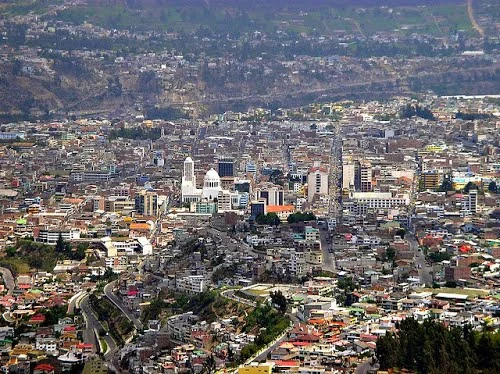

Jardines y recreación
Jardín Botánico Atocha - La Liria
Un lugar agradable para caminar entre flores, áreas verdes y espacios que combinan naturaleza con tranquilidad.
Estos lugares reúnen naturaleza, patrimonio, áreas recreativas, arquitectura y paisajes urbanos que representan la esencia turística de Ambato.
Cada tarjeta presenta el nombre del atractivo, una descripción, su ubicación referencial y la actividad que puede realizar el visitante.
Un lugar agradable para caminar entre flores, áreas verdes y espacios que combinan naturaleza con tranquilidad.

Espacio histórico ligado a la vida y obra de Juan León Mera, ideal para quienes desean conocer más de la cultura ambateña.

Una quinta patrimonial vinculada a uno de los pensadores más importantes del Ecuador y al legado intelectual de Ambato.

Área recreativa pensada para compartir en familia con senderos, puentes, espacios de descanso y ambiente natural.

Una imagen amplia de la ciudad para admirar la distribución urbana, sus edificaciones principales y su entorno andino.

Un punto representativo para tomarse fotografías y llevarse un recuerdo visual de la ciudad y su identidad turística.
Para disfrutar mejor Ambato, combina en un mismo día una visita cultural con un recorrido por parques y una parada gastronómica. Así conocerás varios aspectos del destino en una experiencia completa.